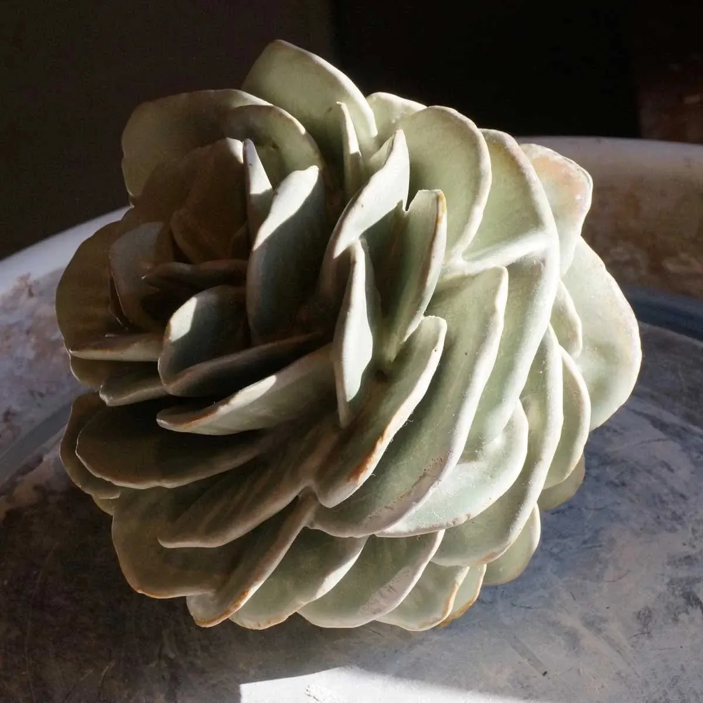
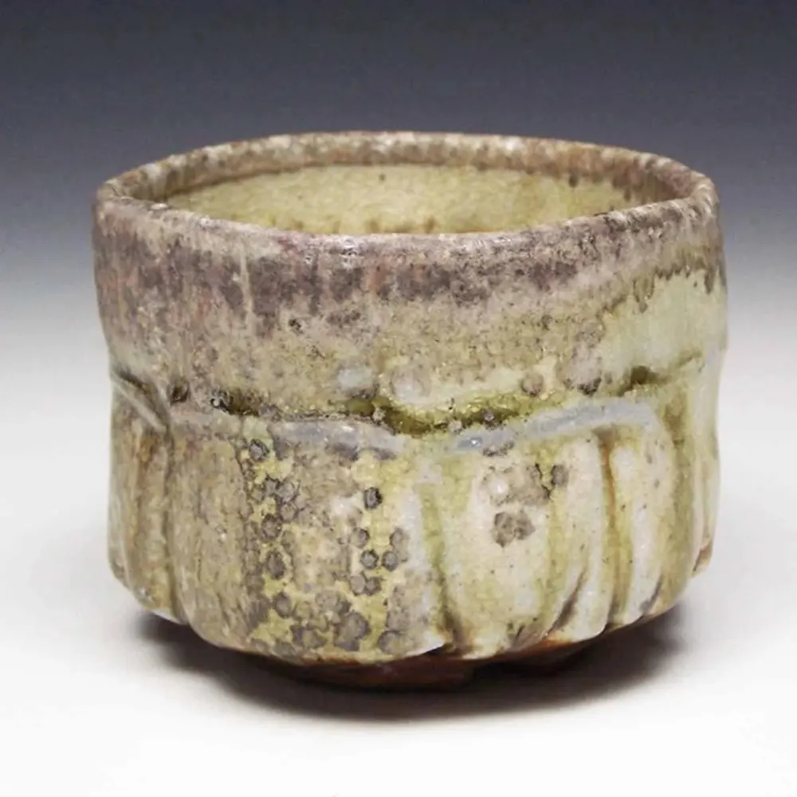
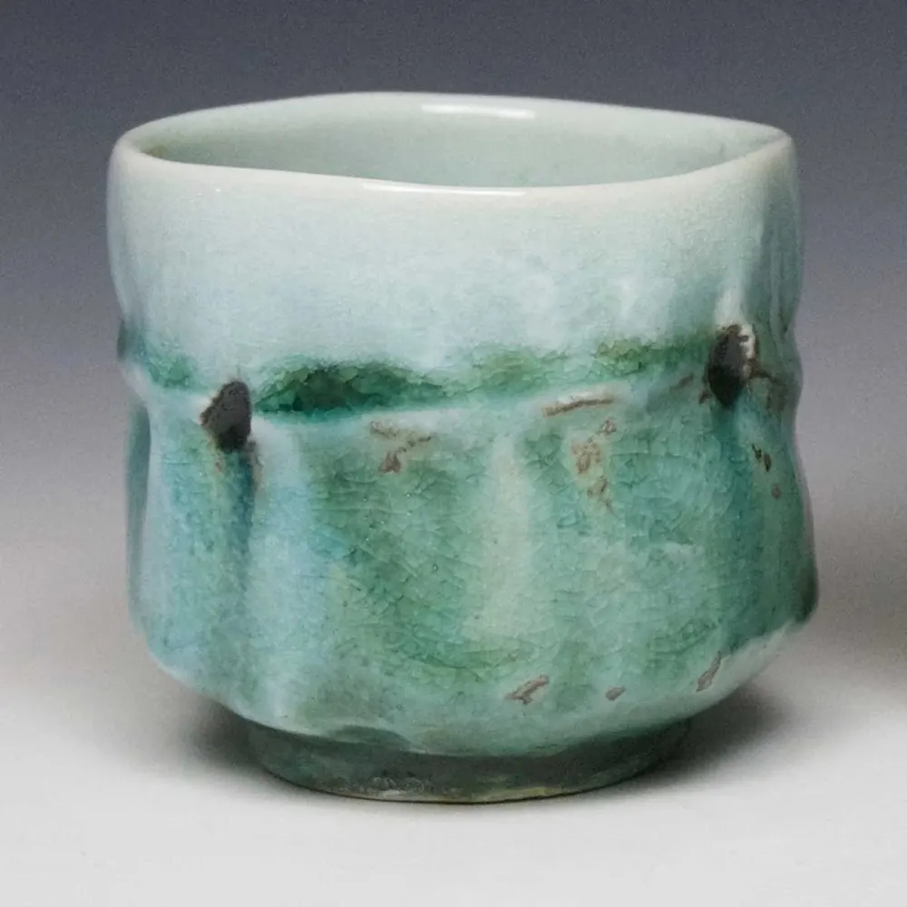
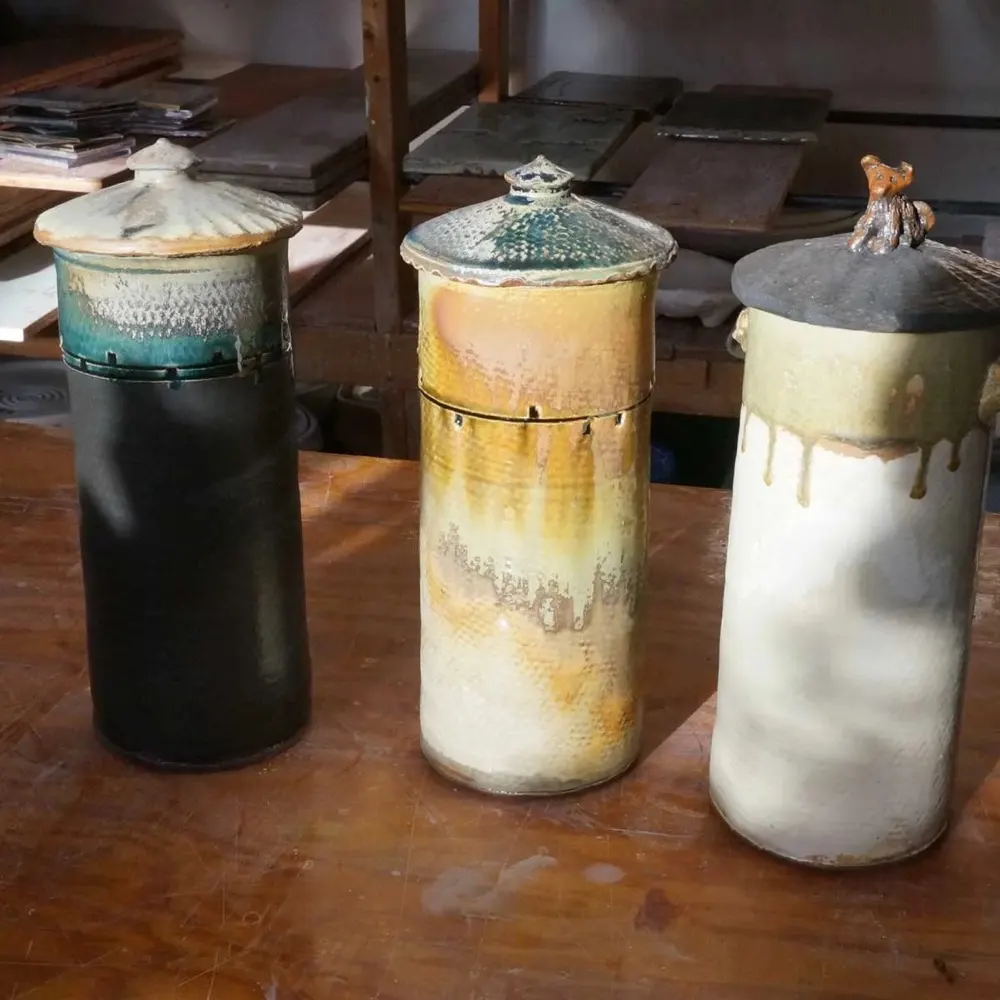
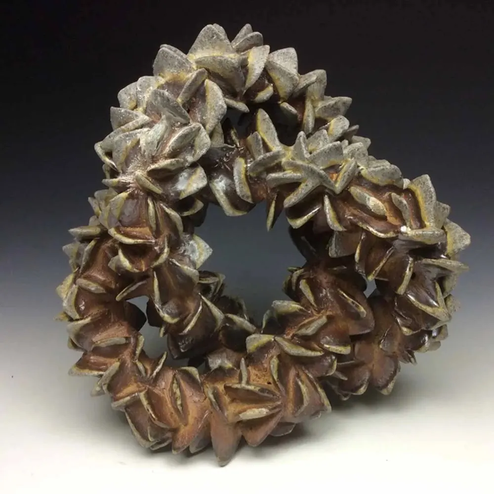

David Orser
Working in clay since 1977
David holds an MFA from Cranbrook Academy of Art. He began working in clay in 1977, when he attended the School of the Museum of Fine Arts in Boston.
- Vases
- Tea bowls
- Bowls & platters
- Tiles
- Jars
- Sculpture

David Orser and Laurel MacDuffie make stoneware, tea bowls, jars and sculpture at Cedar Mountain Potters in Parsonsfield.
We crossed paths at Mudflat Pottery School in Somerville, Massachusetts, got hitched in 1999, and moved to Maine.
We renovated the cow shed into a studio and set up shop as Cedar Mountain Potters. We've been making a living in clay ever since.
See what comes out of the shed
Same studio, different work. Each of us keeps our own shop page with what is available right now.
Working in clay since 1977
David holds an MFA from Cranbrook Academy of Art. He began working in clay in 1977, when he attended the School of the Museum of Fine Arts in Boston.
Working in clay since 1997
Laurel holds an MA in Art Therapy from Lesley University in Cambridge, Massachusetts. She has been making art all her life.
Textured stoneware, petals of clay, quiet glazes.







From our “words” pageClay speaks of body. It reminds us of our own.
“What would I use this for?” is a question of the mind. “How does this feel?” is a question of the body.
Can we feel our way to peace? I ask the clay to show me.
Come to the studio, or find our pots in shops across Maine and New Hampshire.
Portland, Maine. Open year round, 10–6 daily.
Year round at the League shops in:
Want to hear about sales and upcoming events? Send us a line and we'll add you to our occasional email list.
Join the list